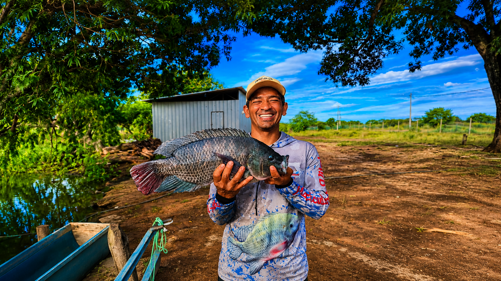
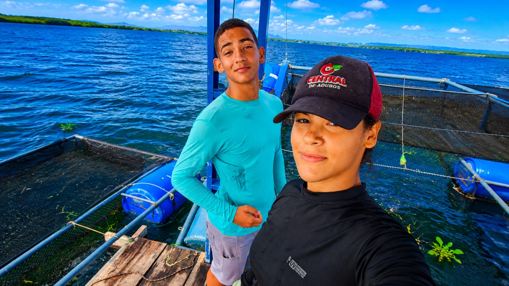
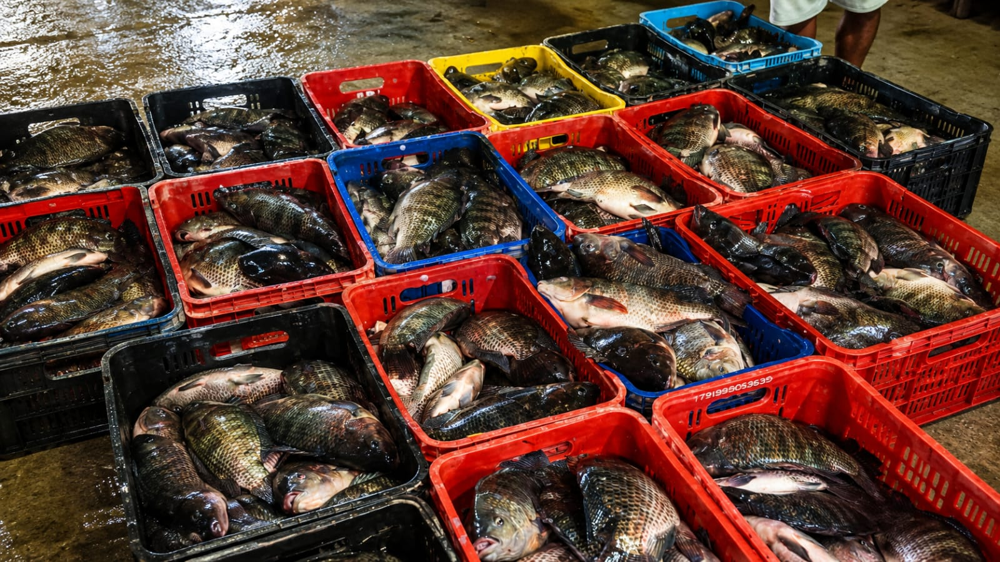
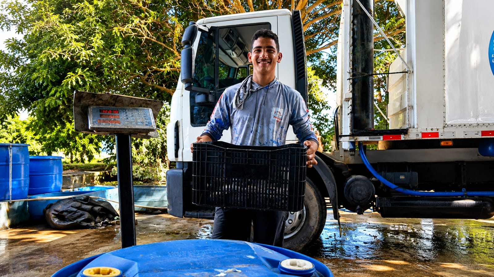
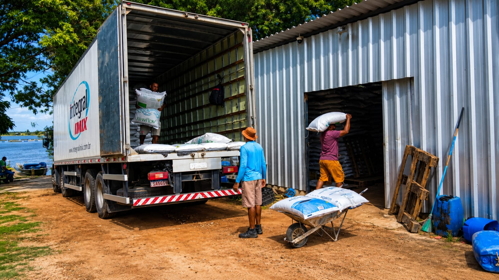

Piscicultura Vital
Fortalecendo produtores de tilápia através da inovação, capacitação e sustentabilidade.

Quem Somos
A Piscicultura Vital nasceu para apoiar os produtores da região, oferecendo conhecimento técnico, oportunidades de mercado e crescimento sustentável.

Missão
Fortalecer a nossa piscicultura vital, garantindo produtos de qualidade para os nossos compradores.
Visão
Ser referência em produção de piscicultura.

Valores
Qualidade, união e responsabilidade.
Nosso Trabalho


Faça parte da Vital
Junte-se à associação e fortaleça sua produção.
Quero Participar